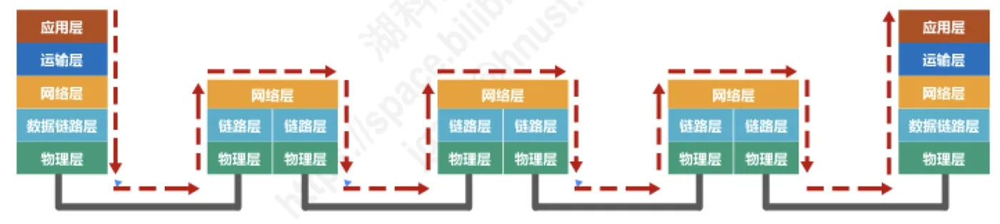
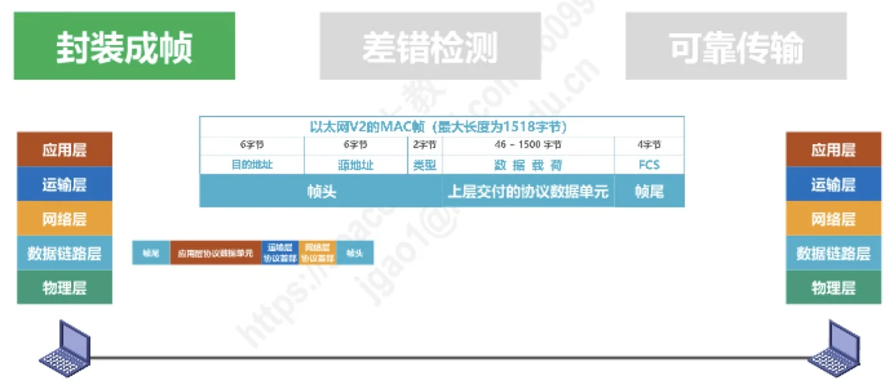
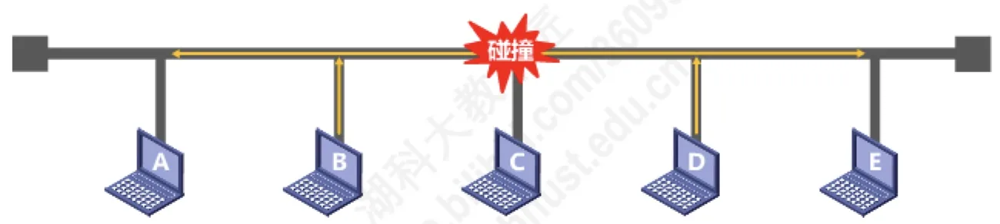

计算机通信与网络 · 第 3 章 数据链路层
3.1 数据链路层概述
从这一章起，我们从「比特怎么传」进入「数据怎么一段一段地可靠送达」。数据链路层夹在物理层和网络层之间，向上为网络层提供无差错的链路服务。本节先看清它挂在体系结构的什么位置、链路和数据链路这两个概念怎么区分，再梳理它要解决的三个重要问题，最后鸟瞰本章的几条线索。
1. 数据链路层在体系结构中的地位
考虑一台主机 H1 经过局域网、路由器 R1、广域网（或电话网）、路由器 R2 再到主机 H2 的通信过程。数据从 H1 出发，要穿过好几段不同的物理线路，而每一段线路的两端都有数据链路层在「接手」数据。
这里要特别注意：数据链路层不仅存在于主机中，也存在于路由器中。主机 H1 和路由器 R1 之间的局域网两端各有链路层；路由器 R1 内部则同时具有网络层和链路层，由网络层负责选择下一跳、由链路层负责把数据真正送过这一段线路。数据就这样一段一段地接力，最终到达 H2。

2. 链路与数据链路
这两个词只差一个字，含义却不同，必须分清：
- 链路（Link）就是从一个结点到相邻结点的一段物理线路，而中间没有任何其他的交换结点。例如图中主机 H1 到路由器 R1 之间是链路 1，路由器 R1 到路由器 R2 之间是链路 2，依此类推。
- 数据链路（Data Link）则是在链路之上再加上实现通信协议的硬件和软件。也就是说，除了物理线路，还要有通信协议来控制这些数据的传输；把硬件和软件加到链路上，才构成数据链路。
常打的一个比方是：链路好比一段物理的「路」，数据链路则是这条路上连同交通规则、信号灯和指挥者一起构成的完整通道。数据链路层正是以帧为单位传输和处理数据的。
3. 数据链路层的三个重要问题
数据链路层要解决的问题可以归纳为三个，它们贯穿本章始终。
（1）封装成帧
数据链路层把上层（网络层）交付的协议数据单元当作数据载荷，在它的前面加上帧头、后面加上帧尾，构成一个帧再发送出去。以使用最广的以太网 V2 的 MAC 帧为例：帧头由 6 字节目的地址、6 字节源地址和 2 字节类型组成，中间是 46~1500 字节的数据载荷，帧尾是 4 字节的帧检验序列 FCS（Frame Check Sequence）；整个帧的最大长度为 1518 字节。
帧头和帧尾的作用之一就是帧定界：接收端靠它们判断一个帧从哪里开始、到哪里结束。3.2 节将专门讨论封装成帧的细节。

（2）差错检测
数据在链路上传输，由于噪声等原因，帧中的某些比特可能出错，也就是出现误码。数据链路层在帧尾放一个检错码（如 FCS），接收端根据帧尾中的检错码来检测帧中是否出现了误码，从而把出错的帧丢弃。3.3 节将介绍差错检测的具体方法。
（3）可靠传输
误码是不可能完全避免的。但是，如果通过一定的机制能够实现「发送方发送什么，接收方就能收到什么」，这种传输就称为可靠传输。在误码率很高的链路上（例如无线链路），可靠传输就显得尤为重要，3.4 节会依次介绍停止-等待协议、回退 N 帧协议和选择重传协议。
4. 使用点对点信道与使用广播信道的数据链路层
数据链路层面对的信道有两种基本类型，处理思路很不一样：
- 使用点对点信道的数据链路层：链路上只有两个结点，一对一通信，问题相对简单，重点是前面说的三个重要问题（封装成帧、差错检测、可靠传输）。3.5 节的点对点协议 PPP 就是这类信道的典型协议。
- 使用广播信道的数据链路层：一条信道上有多个结点共享，一个结点发送的数据会被所有结点收到，「谁先发、谁后发」就成了核心问题，这就是媒体接入控制。共享式局域网（以太网）的媒体接入控制协议是 CSMA/CD（载波监听多点接入／碰撞检测），无线局域网 802.11 的媒体接入控制协议则是 CSMA/CA（载波监听多点接入／碰撞避免）。
在共享式局域网中，多个结点同时发送信号就会发生碰撞，导致信号互相破坏，这正是 CSMA/CD 要解决的问题。此外，数据链路层还涉及一批互连设备：网桥和交换机的工作原理（3.9 节），以及集线器（物理层互连设备）与交换机的区别（3.8 节）。

本节小结
- 数据链路层既在主机中、也在路由器中；数据由网络层选路、由链路层一段一段地接力传送；
- 链路是相邻结点之间的物理线路（中间没有其他交换结点）；在链路上加上实现通信协议的硬件和软件就构成数据链路；数据链路层以帧为单位传输和处理数据；
- 三个重要问题：封装成帧（加帧头帧尾，例如以太网 V2 的 MAC 帧最大 1518 字节）、差错检测（用帧尾的检错码 FCS 判断有无误码）、可靠传输（做到发送方发什么、接收方就收到什么）；
- 按信道类型分两条线索：点对点信道（PPP，重点是三个重要问题）与广播信道（重点是媒体接入控制：以太网用 CSMA/CD，802.11 用 CSMA/CA），后者还涉及碰撞与网桥、交换机等数据链路层互连设备；
- 本章后续顺序：3.2 封装成帧 → 3.3 差错检测 → 3.4 可靠传输 → 3.5 点对点协议 PPP → 3.6 媒体接入控制 → 3.7 MAC 地址与 ARP → 3.8~3.11 互连设备与 VLAN。